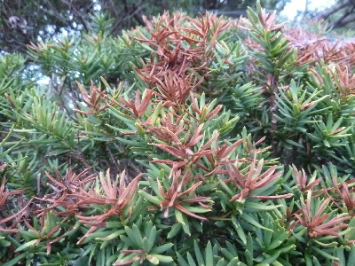
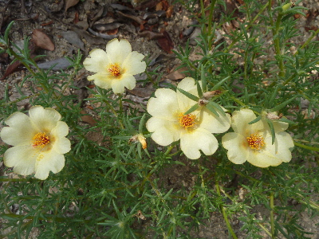
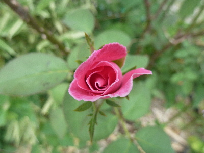
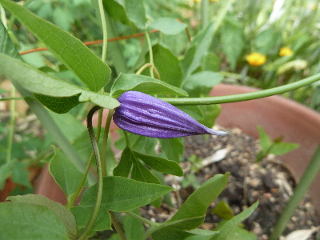

遊びで植物を育てよう
2018/08/26
庭木が水不足で茶色くなりました。
猛暑・酷暑のせいで庭木が枯れそうです。

小さい木が枯れるのは近年あったんですが、すこし大きい庭木まで茶色くなるとは。
水は掛けているんですが足りなかったのかな。
早く涼しくなって欲しいです。
【ページTOP】
【8月TOP】
【園芸TOP】
2018/08/05
昔からある夏の花だけど、花屋さんでは見ないかな。
毎年夏に咲いてる花ですが、何て名前でしたっけ？

ネットで検索して、なかなか出てこなかったです。
名前はマツバボタンでした。
流行ってないのかな。
【ページTOP】
【8月TOP】
【園芸TOP】
2018/08/05
酷暑でもバラが咲いています。
このバラの木は今頃調子よく咲いてます。

暑いなか元気です。
この木はよく咲くので増やそうかな。
【ページTOP】
【8月TOP】
【園芸TOP】
2018/08/05
今年買ったクレマチスに花がつきました。
買った時はひょろよろで、今もあんまり茂ってないですが花が咲きました。（まだ咲いてないのかな。）

きれいですね。
でも小さいな。色がきれいだけど、あんまり目立たない。
これは普通に置くだけでは目につきませんね。
大きくするとか、高い場所に置くといいかな。
【ページTOP】
【8月TOP】
【園芸TOP】
過去の日記
【2024年8月の日記】
【2023年8月の日記】
【2022年8月の日記】
【2021年8月の日記】
【2020年8月の日記】
【2019年8月の日記】
【2018年8月の日記】
【2017年8月の日記】
【2016年8月の日記】
【2015年8月の日記】
【2014年8月の日記】
【2013年8月の日記】
【2012年8月の日記】
【ページTOP】
【8月TOP】
【園芸TOP】
畑仕事じゃないよ。
【おいしいものを食べよう。】【しっかり寝よう。】
【ソロ活をしよう!】【季節感のあることをしよう。】【動画視聴はほどほどに。】【当サイトの全てのコンテンツは無断転載禁止です。】